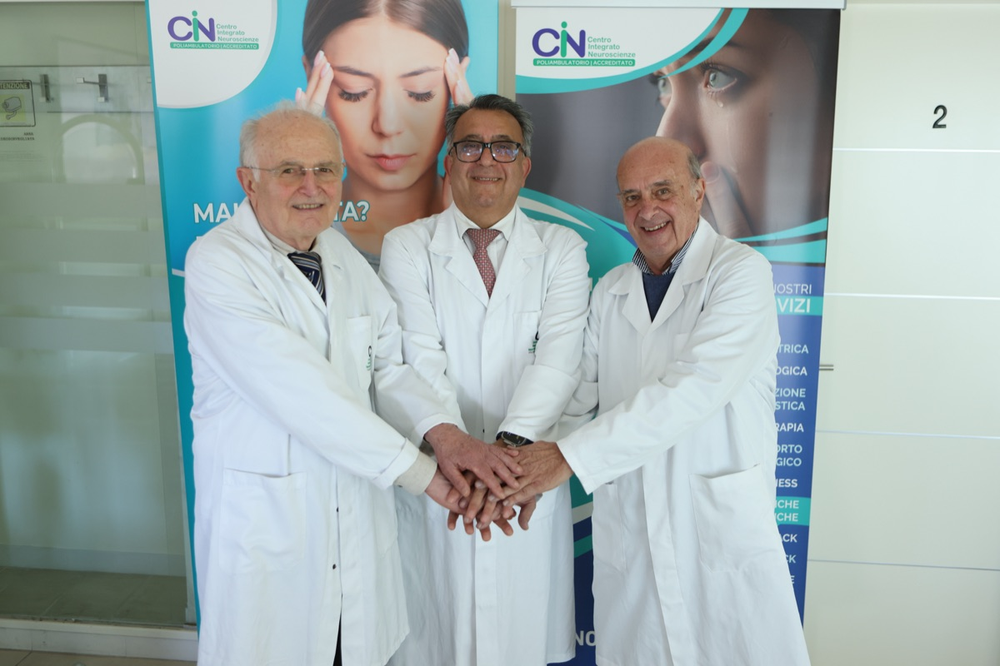
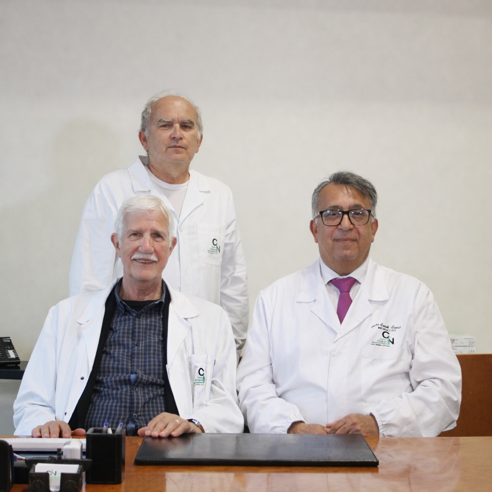

Risorse cliniche, collaborazione e invio pazienti

Il Dott. Saeid Saadi è disponibile per collaborazioni cliniche con medici di medicina generale, neurologi e specialisti di altre discipline. Che si tratti di un invio diretto, di una seconda opinione o di un confronto su un caso complesso, il Poliambulatorio CIN rappresenta un punto di riferimento neurologico qualificato per l'area romagnola e le regioni limitrofe.
Le aree di maggiore interesse per la collaborazione collegiale includono i disturbi neurologici funzionali — ancora spesso sottodiagnosticati o affrontati in modo frammentato —, le cefalee di difficile gestione nell'ambito del Centro Cefalee accreditato ANIRCEF, e la neurofisiologia clinica con elettromiografia ed elettroneurografia per la valutazione diagnostica strumentale.
Il Dott. Saadi valorizza il rapporto con il curante: dopo ogni visita di secondo livello, il medico inviante riceve una relazione strutturata con l'ipotesi diagnostica, il ragionamento differenziale e le indicazioni terapeutiche proposte, facilitando la continuità di cura.
Ambiti clinici in cui il Dott. Saadi offre valutazione diagnostica avanzata e disponibilità alla collaborazione interprofessionale.
Diagnosi positiva basata su segni clinici specifici. Debolezza funzionale, tremore, disturbi della marcia, crisi non epilettiche dissociative. Approccio integrato neurologia-psicologia con protocollo multidisciplinare CIN.
Emicrania con e senza aura, cefalea a grappolo, cefalea cronica quotidiana, abuso di farmaci. Protocolli diagnostici e terapeutici aggiornati in linea con le linee guida ANIRCEF. Accreditamento come Centro Cefalee.
EMG a riposo e da sforzo, elettroneurografia per la valutazione delle velocità di conduzione motoria e sensitiva. Studio di neuropatie, radicolopatie, plessopatie e patologie del motoneurone. Referto clinicamente orientato per il collega richiedente.
Tecniche di neuromodulazione non invasiva introdotte in Italia dal Dott. Saadi dopo la formazione negli USA. Indicazioni in neurologia funzionale, cefalee, disturbi cognitivi post-COVID, ADHD neurologico. Riconosciute anche presso l'Istituto Neurologico Besta di Milano.
Disponibilità per confronto su casi a diagnosi incerta o con presentazione atipica. Utile nei quadri neurologici che non rispondono al trattamento atteso, nelle diagnosi di esclusione non convincenti, o quando il paziente ha già eseguito un workup senza risposta soddisfacente.

Il cardine metodologico del Dott. Saadi nei disturbi neurologici funzionali è la diagnosi positiva: l'identificazione di segni clinici specifici e riproducibili — segno di Hoover, test di entrainment per il tremore, segno di Dravet per le crisi — piuttosto che la semplice esclusione delle cause organiche. Questo approccio riduce il rischio diagnostico, evita esami ridondanti e permette di avviare il percorso terapeutico in tempi più rapidi.
"La diagnosi funzionale non è una diagnosi di esclusione: è una diagnosi neurologica a pieno titolo."
Il ragionamento differenziale è strutturato e documentato: ogni valutazione distingue con chiarezza la componente funzionale da quella eventualmente organica sovrapposta — dato che la coesistenza è documentata e non rara. Il collega inviante riceve una relazione clinica dettagliata che esplicita ipotesi, segni rilevati, esami integrativi proposti e piano terapeutico.
Sul versante comunicativo, il Dott. Saadi dedica particolare attenzione alla restituzione diagnostica al paziente: spiegare la natura del disturbo in modo comprensibile e non stigmatizzante è parte integrante del processo terapeutico, con impatto diretto sulla prognosi e sull'aderenza al percorso di cura.
L'integrazione multidisciplinare è strutturale: il Poliambulatorio CIN dispone di psicologi clinici, fisiatri e nutrizionisti con cui il Dott. Saadi collabora regolarmente, garantendo che il piano terapeutico proposto possa essere eseguito all'interno della stessa struttura senza frammentare il percorso del paziente.
Un processo semplice e trasparente, pensato per facilitare la continuità di cura tra curante e specialista.
Il medico curante o lo specialista inviante contatta il CIN via telefono o email per concordare la visita. È possibile segnalare il caso in modo sintetico per facilitare la preparazione della valutazione.
Il Dott. Saadi esegue la visita neurologica specialistica con anamnesi approfondita, esame obiettivo completo e, se necessario, integrazione con esami strumentali (EMG/ENG) eseguibili nella stessa struttura.
Il medico inviante riceve una relazione strutturata con l'ipotesi diagnostica, i segni clinici rilevati, il ragionamento differenziale e il piano terapeutico proposto — redatta in linguaggio clinico orientato alla continuità di cura.
Per i casi in gestione multidisciplinare, il Dott. Saadi rimane disponibile per aggiornamenti periodici e confronti collegiali sull'evoluzione del quadro clinico, garantendo una presa in carico coordinata nel tempo.